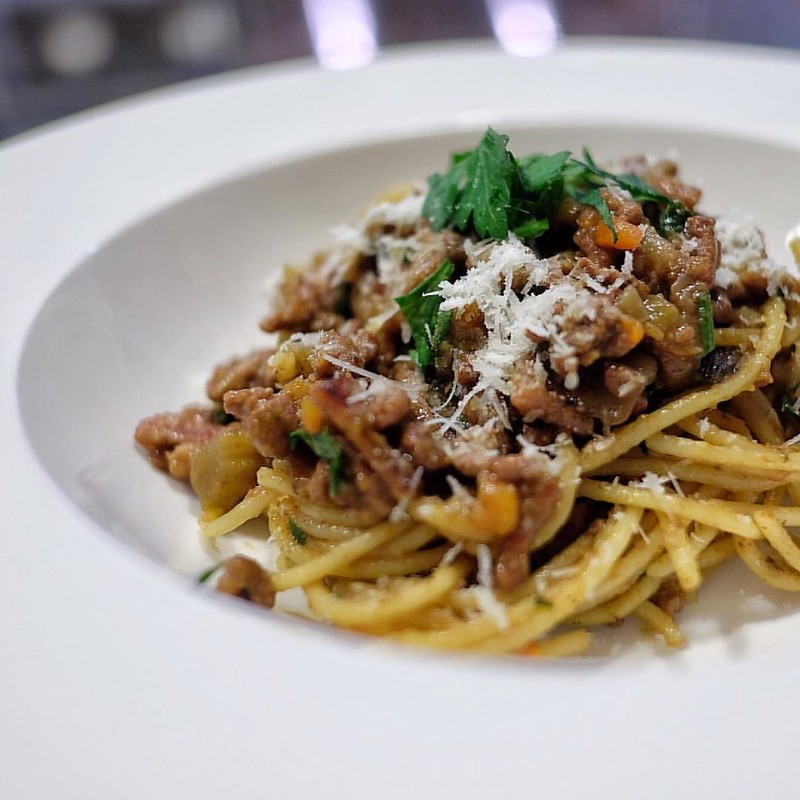

Back to Home
Spaghetti Bolognese

Description
An Italian-inspired dish. Spaghetti is cooked and served with a tomato-based meat sauce, and often topped with parmesan cheese.
Ingredients
Serves 4
- 500g beef mince
- 2 cloves garlic, minced
- 1 tin diced tomatoes
- 2 rashers bacon, diced
- 1 carrot, grated
- 1 white onion, diced
- 1/2 cup beef stock or water
- 3 teaspoon Worcestershire sauce
- 500g dried spaghetti
Instructions
- In a large frypan over medium heat, add onion and bacon, cooking until the onion is translucent. Then, add garlic and cook until fragrant
- Add beef mince and cook until browned, breaking up the mince.
- Add tin of diced tomatoes, grated carrot and Worcestershire sauce, stirring well.
- Pour beef stock or water into the empty tomato tin to get the last of the tomatoes out, and pour onto the mince.
- Cook on medium until bubbling, then simmer on low for between 30 minutes and 2 hours.
- Prepare a pot of boiling water, well salted.
- 10 minutes prior to serving, add dried spaghetti to water. Cook until preferred doneness.
- Add 1/2 cup of the spaghetti water to the sauce and stir through, then drain the spaghetti.
- Place the spaghetti back into the pot, and add the mince sauce to it, stirring it through well.
- Serve into bowls, and top with grated parmesan if you like.
Back to Home